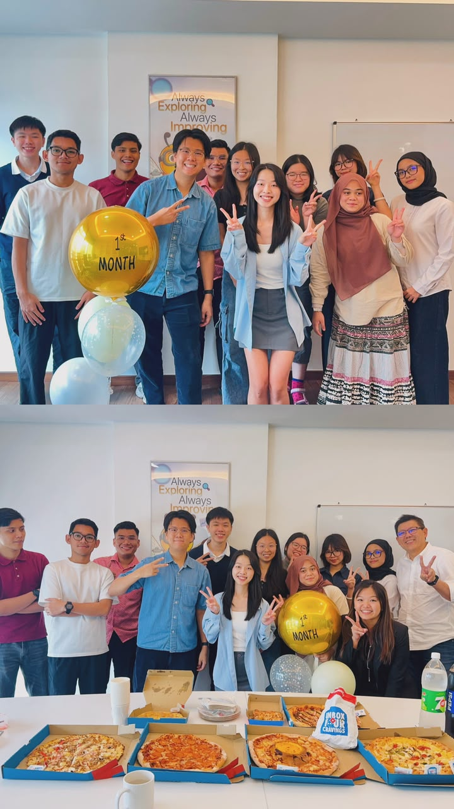
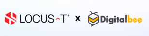
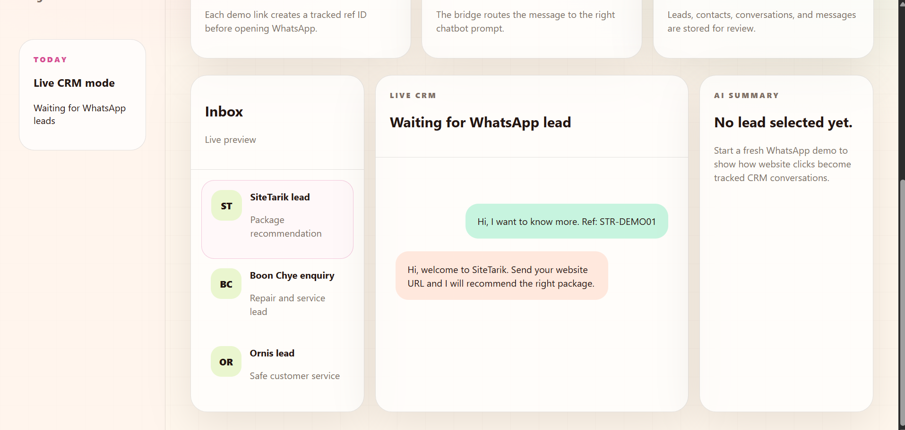

Gain experience
Understand a real working environment
Graduating intern sharing session
My Internship Journey at LOCUS-T


Use ← → to navigate
02 / Before I started
The starting point →Understand a real working environment
Learn how technology supports businesses
Turn ideas into working solutions
03 / What I worked on
A moodboard of making
Created a customised AI assistant

Built and tested chatbot responses

Tracked WhatsApp leads and conversations in one live inbox
Open live demo ↗04 / Challenge to growth
Small steps, real changeBefore
Unsure where to begin
What I did
Tested different solutions
Learned through mistakes
After
More confident
Better at problem-solving
Confusion became curiosity.
05 / What I learned
A reflection in progress
the project I’m taking with me
I learned how to turn an idea
into a working digital solution.
06 / Word of wisdom
To the next intern
Start, ask and learn
along the way.
Be curious.
Ask meaningful questions.
Volunteer for opportunities beyond your assigned tasks.

One word for my internship
Transformative
Thank you.